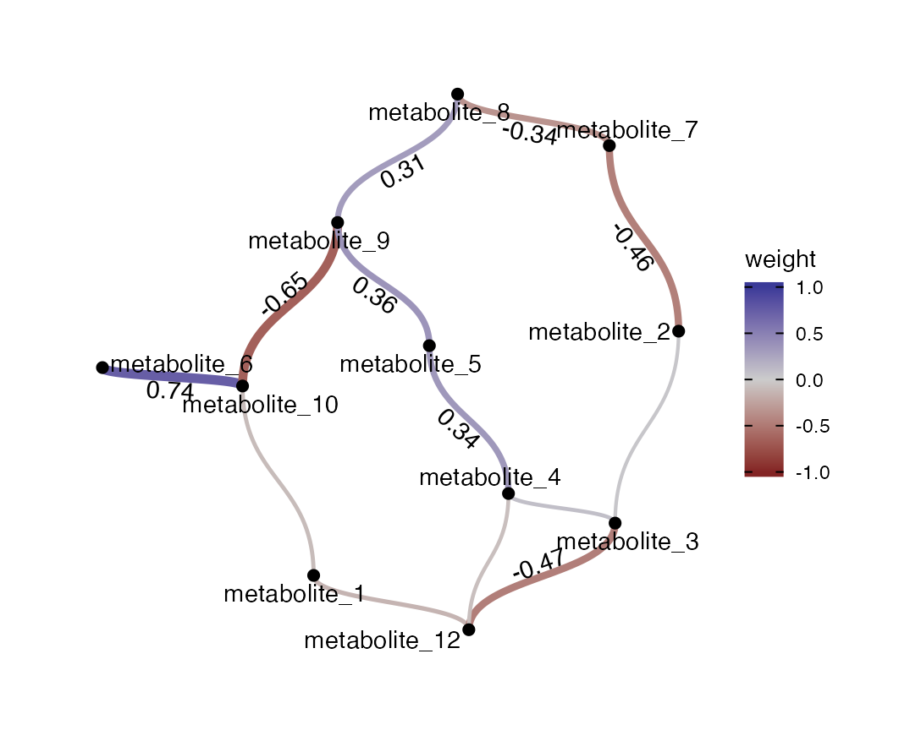
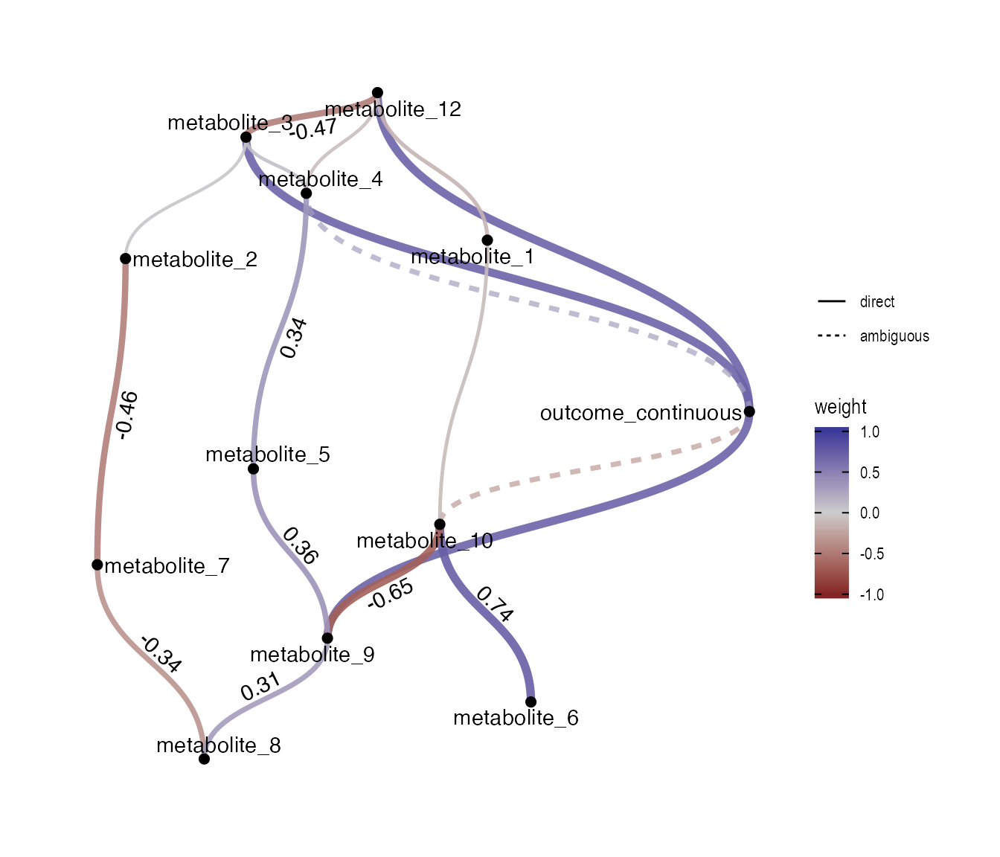
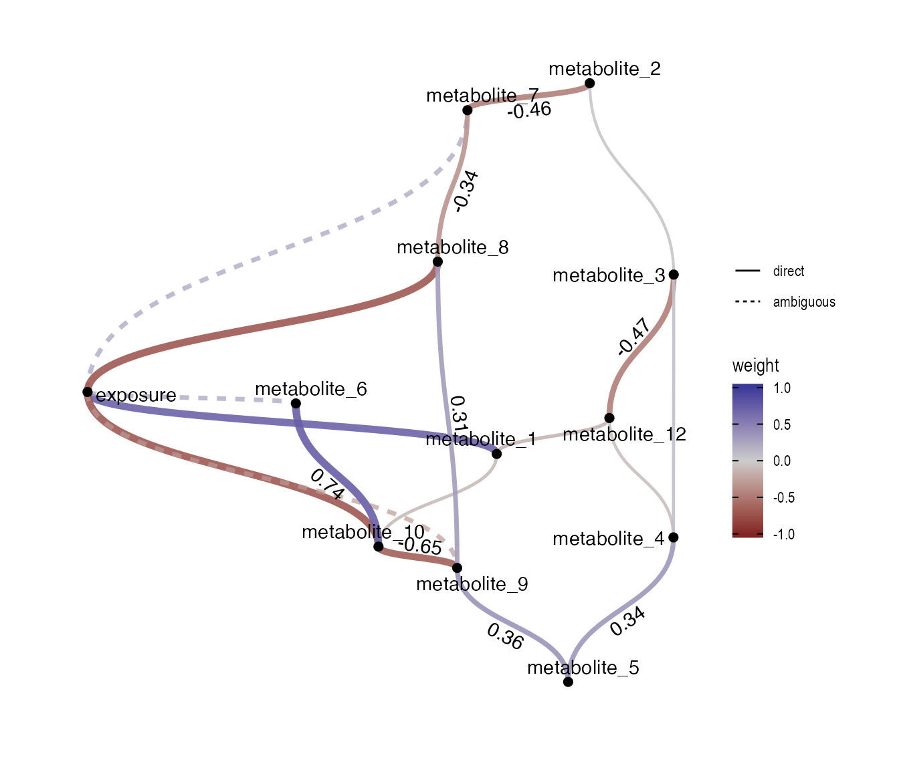

Getting started with NetCoupler
Clemens Wittenbecher
Luke Johnston
2020-12-13
Source:vignettes/NetCoupler.Rmd
NetCoupler.RmdThe goal of NetCoupler is to estimate causal links between a set of -omic (e.g. metabolomics, lipidomics) or other high-dimensional data and an external variable, such as a disease outcome, an exposure, or both. The NetCoupler-algorithm, initially formulated by Clemens Wittenbecher (Wittenbecher 2017), links a conditional dependency network with an external variable (i.e. an outcome or exposure) to identify network-independent associations between the network variables and the external variable, classified as direct effects.
The input given to NetCoupler include:
- Standardized metabolic or other high-dimensional data.
- Exposure or outcome data.
- Network estimating method (default is the PC algorithm (Colombo and Maathuis 2014) from the pcalg package).
- Modeling method (e.g. linear regression with
lm()), including confounders to adjust for.
The final output is the modeling results along with the results from NetCoupler’s classification. Results can be displayed as a joint network model in graphical form.
Overall framework
NetCoupler has several frameworks in mind:
- Works with magrittr
%>%or base R|>operator. - Works with tidyselect helpers (e.g.
starts_with(),contains()). - Is auto-complete friendly (e.g. start function names with
nc_). - Inputs and outputs of functions are in general tibbles/dataframes or tidygraph tibbles.
- Generic modeling approach by using model and settings as function argument inputs.
Workflow
The general workflow for using NetCoupler revolves around the five main functions:
-
nc_standardize(): The algorithm in general, but especially the network estimation method, is sensitive to the values and distribution of the variables. Scaling the variables by standardizing, mean-centering, and natural log transforming them are important to making sure more accurate estimations. -
nc_estimate_network(): Estimate the connections between metabolic variables as a undirected graph based on dependencies between variables. This network is used to identify metabolic variables that are connected to each other as neighbours. -
nc_plot_network(): Visualize the connections estimated fromnc_estimate_network(). -
nc_estimate_exposure_links()andnc_estimate_outcome_links(): Uses the standardized data and the estimated network to classify the conditionally independent relationship between each metabolic variable and an external variable (e.g. an outcome or an exposure) as either being a direct, ambiguous, or no effect relationship. -
nc_plot_links(): Plots the results from thenc_estimate_exposure_links()ornc_estimate_outcome_links().
Simple example
The below is an example using a simulated dataset for demonstrating NetCoupler.
Estimating the metabolic network
For estimating the network, it’s (basically) required to standardize the metabolic variables before inputting into nc_estimate_network(). This function also log-transforms and scales (mean-center and z-score normalize) the values of the metabolic variables. We do this because the network estimation algorithm can sometimes be finicky about differences in variable numerical scale (mean of 1 vs mean of 1000).
library(NetCoupler)
std_metabolic_data <- simulated_data %>%
nc_standardize(starts_with("metabolite"))If you intend to also adjust for potential confounders when estimating the exposure or outcome side connections, you can include the potential impact these confounders may have on the network by regressing the confounders on the metabolic variables. Then the residuals can be extracted and used when constructing the network. You do this also with the nc_standardize() function.
std_metabolic_data <- simulated_data %>%
nc_standardize(starts_with("metabolite"),
regressed_on = "age")After that, you can estimate the network.
# Make partial independence network from metabolite data
metabolite_network <- std_metabolic_data %>%
nc_estimate_network(starts_with("metabolite"))To see what the network looks like, use the function nc_plot_network().
std_metabolic_data %>%
nc_plot_network(metabolite_network)
While the plot is a bit crowded, it at least provides a base to start tidying up from.
Estimating exposure and outcome-side connections
For the exposure and outcome side, you should standardize the metabolic variables, but this time, we don’t regress on the confounders since they will be included in the models.
standardized_data <- simulated_data %>%
nc_standardize(starts_with("metabolite"))Now you can estimate the outcome or exposure and identify direct effects for either the exposure side (exposure -> metabolite) or the outcome side (metabolite -> outcome). For more details on the algorithm, see the vignette("description"). For the exposure side, the function identifies whether a link between the exposure and an index node (one metabolic variable in the network) exists, independent of potential confounders and from neighbouring nodes (other metabolic variables linked to the index variable). Depending on how consistent and strong the link is, the effect is classified as “direct”, “ambiguous”, or “none”.
In the example below, we specifically generated the simulated data so that the exposure is associated with metabolites 1, 8, and 12. And as we can see, those links have been correctly identified.
outcome_estimates <- standardized_data %>%
nc_estimate_outcome_links(
edge_tbl = as_edge_tbl(metabolite_network),
outcome = "outcome_continuous",
model_function = lm
)
outcome_estimates
#> # A tibble: 11 x 7
#> outcome index_node estimate std_error p_value adj_p_value effect
#> <chr> <chr> <dbl> <dbl> <dbl> <dbl> <chr>
#> 1 outcome_continu… metabolite_1 -0.00437 0.0223 0.845 0.888 none
#> 2 outcome_continu… metabolite_… -0.129 0.0221 0 0 ambiguo…
#> 3 outcome_continu… metabolite_… 0.260 0.0215 0 0 direct
#> 4 outcome_continu… metabolite_2 -0.0350 0.0223 0.116 0.180 none
#> 5 outcome_continu… metabolite_3 0.171 0.0220 0 0 direct
#> 6 outcome_continu… metabolite_4 0.0491 0.0223 0.0275 0.0487 ambiguo…
#> 7 outcome_continu… metabolite_5 0.120 0.0221 0 0 none
#> 8 outcome_continu… metabolite_6 -0.0381 0.0223 0.0875 0.143 none
#> 9 outcome_continu… metabolite_7 0.0149 0.0223 0.503 0.589 none
#> 10 outcome_continu… metabolite_8 0.0338 0.0223 0.130 0.196 none
#> 11 outcome_continu… metabolite_9 0.189 0.0219 0 0 direct
exposure_estimates <- standardized_data %>%
nc_estimate_exposure_links(
edge_tbl = as_edge_tbl(metabolite_network),
exposure = "exposure",
model_function = lm
)
exposure_estimates
#> # A tibble: 11 x 7
#> exposure index_node estimate std_error p_value adj_p_value effect
#> <chr> <chr> <dbl> <dbl> <dbl> <dbl> <chr>
#> 1 exposure metabolite_1 0.151 0.0215 0 0 direct
#> 2 exposure metabolite_10 -0.362 0.0202 0 0 direct
#> 3 exposure metabolite_12 -0.0171 0.0218 0.432 0.523 none
#> 4 exposure metabolite_2 0.0189 0.0218 0.387 0.516 none
#> 5 exposure metabolite_3 0.0279 0.0218 0.200 0.364 none
#> 6 exposure metabolite_4 0.0207 0.0218 0.342 0.503 none
#> 7 exposure metabolite_5 -0.0230 0.0218 0.290 0.473 none
#> 8 exposure metabolite_6 0.00157 0.0218 0.943 0.943 ambiguous
#> 9 exposure metabolite_7 0.0198 0.0218 0.362 0.503 ambiguous
#> 10 exposure metabolite_8 -0.328 0.0205 0 0 direct
#> 11 exposure metabolite_9 -0.0780 0.0217 0.000336 0.000868 ambiguousIf you want to adjust for confounders and have already used regressed_on in the nc_standardize() function, add confounders to nc_estimate_outcome_links() or nc_estimate_exposure_links() with the adjustement_vars argument:
outcome_estimates <- standardized_data %>%
nc_estimate_outcome_links(
edge_tbl = as_edge_tbl(metabolite_network),
outcome = "outcome_continuous",
model_function = lm,
adjustement_vars = "age"
)Plotting
To visualize the results of the linked network graph and the effect classification, there are two functions to show the exposure and the outcome plots. In general, these plot functions are currently mostly for exploratory purposes and are too “busy” and crowded to be meaningful for presentation or publication. However, these are good starting points for making prettier, more legible plots.
nc_plot_outcome_estimation(
standardized_data,
metabolite_network,
outcome_estimates
)
nc_plot_exposure_estimation(
standardized_data,
metabolite_network,
exposure_estimates
)
Colombo, Diego, and Marloes H. Maathuis. 2014. “Order-Independent Constraint-Based Causal Structure Learning.” Journal of Machine Learning Research 15 (1): 3741–82. http://dl.acm.org/citation.cfm?id=2627435.2750365.
Wittenbecher, Clemens. 2017. “Linking Whole-Grain Bread, Coffee, and Red Meat to the Risk of Type 2 Diabetes.” Doctoralthesis, Universität Potsdam. https://nbn-resolving.org/urn:nbn:de:kobv:517-opus4-404592.